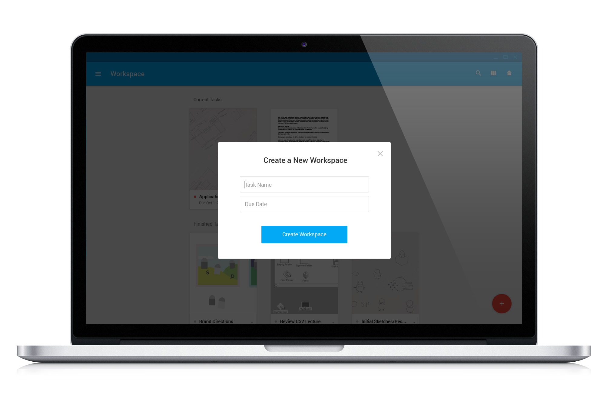
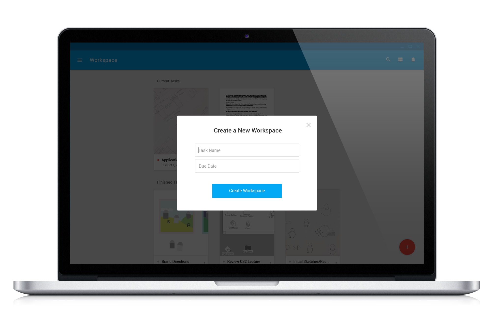

Workspace is a desktop app that organizes work related programs and applications.
It allows users to create multiple "workspaces" for each of their tasks and organize applications normally used between work and play. Each space acts as a platform that regulates the number of applications open on a desktop. It allows users to select which specific apps to run at once, streamlining the multitasking experience. This motivates users to finish their tasks with minimal distraction through the use of a time out feature on applications that are not work related. View the prototype. Workspace is a work in progress.
Context
Workspace is a proposed solution that aleviates the frustration and confusion of multiple desktop windows primarily on the Mac OS. Often times, users who heavily rely on the computer for their tasks run into the issue of using the same application (i.e. Photoshop) for multiple purposes. The initial design does not take into account technical feasibility, and Workspace allows programs to open one window at a time depending on priority.
Goals
Personal approach to recontextualize a source of data or information. To experiment with ways to reconfigure the digital multitasking experience.
Process
I based the design off of the functionality of Google Docs and the appeal of Material Design to incorporate product conventions that most people are comfortable using. I considered ways to engage with the end user by including time out features and motivational messages.
Final Designs
Upon opening the app, the user can view all their current tasks and their corresponding due dates. They can also change viewing modes.

 The user can create a new "workspace" which will appear in their list of tasks.

The user can create a new "workspace" which will appear in their list of tasks.

 The user can now select and enter the "workspace" they made.
The user can now select and enter the "workspace" they made.

 Within the workspace, they can select multiple applications to open and use outside of the app.
Workspace encourages users to focus on their priorites by timing them out from distracting applications and allowing them to take breaks.
Within the workspace, they can select multiple applications to open and use outside of the app.
Workspace encourages users to focus on their priorites by timing them out from distracting applications and allowing them to take breaks.
 Workspace users can easily navigate to any other tasks.
Workspace users can easily navigate to any other tasks.
Reflection
This project was interesting for me in that I had the chance to tackle a ubiquitious issue among those who frequent computers for work. Exploring the interaction patterns of Google products was a great learning experience for me. However, in the future I will definitely acknowledge technical ramifications of my design.